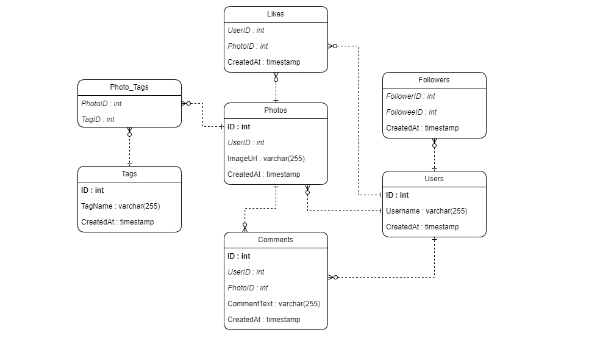
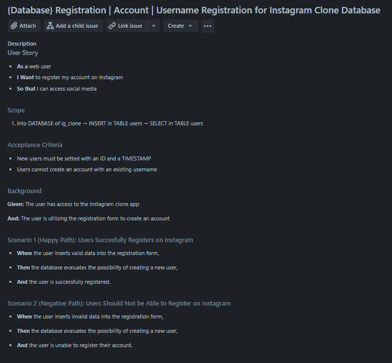
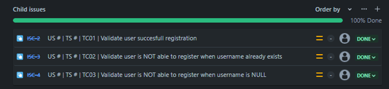
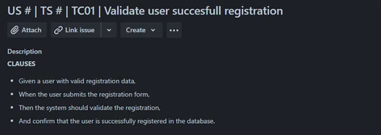

Performing database testing on an Instagram clone using various queries
Intoduction
This project is centered on the development and rigorous testing of a dynamic Instagram database clone. The database structure is designed with interconnected tables for seamless interaction. My current focus is on enhancing the user registration feature and crafting a JIRA test case to evaluate the username registration functionality.
Moving forward, the project will involve additional queries inspired by real-life scenarios, aiming to gather specific data that reflects authentic user interactions and behaviors.
Here you can see the respective diagram for the database.

Jira Issue for User Registration Testing
After designing the database, I made a simple Jira issue describing User Story, Scope, Scenarios, etc. I explored the objectives, methodologies, and outcomes associated with refining the username registration process.

I've added three child issues, each representing different Test Cases, to evaluate diverse scenarios for username registration. Each TC includes its own clauses.


Into MySQL
To finalize the test cases, I employed straightforward INSERT INTO () VALUES queries for testing data insertion, followed by a SELECT FROM query to verify the successful insertion of data in the TC01.
Here, you can view both the queries and their respective results.

TC01

TC02

TC03
Some other MySQL queries
Throughout 'The Ultimate MySQL Bootcamp' instructed by Colt Steele on Udemy, where I constructed this database, I was tasked with challenges mirroring real-world scenarios.
In this section, I present the questions posed during these challenges, showcasing the utilization of more intricate queries to retrieve the requested information based on specific situations.